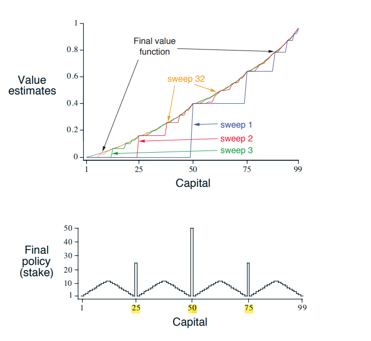

My Public Notebook ..
#1 : Gambler’s Problem 🔎
I want to refer a beautiful classic problem in the circle of probability theory which is well known and described in dynamic programming litrature:
A Gambler has the opportunity to make bets on the outcomes of a sequence of coin flips. If the coin comes up heads, he wins as many dollars as he has staked on that flip; if it is tails, he loses his stake. The game ends when the gambler wins by reaching his goal of $100, or loses by running out of money. On each flip, the gambler must decide what portion of his capital to stake, in integer numbers of dollars. This problem can be formulated as an undiscounted, episodic, finite MDP. A policy is a mapping from levels of capital to stakes. The optimal policy maximizes the probability of reaching the goal. Let ph denote the probability of the coin coming up heads. If ph is known, then the entire problem is known and it can be solved, for instance, by value iteration. Figure 4.3 shows the change in the value function over successive sweeps of value iteration, and the final policy found, for the case of ph = 0.4.
Why does the optimal policy for the gambler’s problem have such a curious
form?
In particular, for capital of 50 it bets it all on one flip, but for capital of 51 it does
not.
Why is this a good policy?
Let see what happens in iterations:
.gif)
What-if :
Goal = 1000 & Win Probability = 0.4999999?

What-if :
Goal = 1000 & Win Probability = 0.5000001?

🤯
#2 : Coffee-Mixing Problem 🔎
1. Markov Decision Process (MDP) Formulation
- States (𝒮): Partial ingredient sequences (e.g., ∅, milk, milk-coffee). Terminal states 𝒮𝒯 are permutations of {milk, coffee, syrup}.
- Actions (𝒜): Adding unused ingredients (e.g., 𝒜(milk) = {coffee, syrup}).
- Transitions: Deterministic; appending action-ingredient to current state.
- Reward (𝑹): User satisfaction score 𝑟 ∈ [0,1] received only at terminal states.
2. Dynamic Programming Framework
- Value Function:
𝑉(𝑠) = max𝑎∈𝒜(𝑠) 𝑄(𝑠,𝑎)
- Bellman Equation (Deterministic):
𝑄(𝑠,𝑎) = 𝑅(𝑠') + 𝛾𝑉(𝑠')
For terminal 𝑠', 𝑉(𝑠') = 𝑅(𝑠'), with discount 𝛾=1 (episodic task).
3. Q-Learning Algorithm
- Update Rule:
𝑄(𝑠,𝑎) ← (1−𝛼)𝑄(𝑠,𝑎) + 𝛼[𝑟 + 𝛾 max𝑎'𝑄(𝑠',𝑎')]
Simplified for terminal rewards: 𝑄(𝑠,𝑎) ← (1−𝛼)𝑄(𝑠,𝑎) + 𝛼𝑟
- Policy: 𝜖-greedy selection:
𝜋(𝑠) = argmax𝑎𝑄(𝑠,𝑎) with probability 1−𝜖, else random action.
4. Implementation Steps
1. Initialize 𝑄-table with zeros
2. For each user interaction:
a. Build ingredient sequence via 𝜖-greedy actions
b. Observe terminal reward 𝑟 (user feedback)
c. Update all 𝑄(𝑠,𝑎) along trajectory
3. Converge to optimal policy: π*(𝑠) = preferred ingredient sequence
5. Example: Optimal Sequence Learning
If users prefer milk → coffee → syrup:
- 𝑄(milk-coffee, syrup) ≈ 0.9 (high reward)
- 𝑄(milk, coffee) > 𝑄(milk, syrup) due to downstream rewards
- Exploration ensures all permutations are tested initially
My Article's Draft 📝
Algorithmic Approaches to Pricing in Electricity Markets with Independent System Operators
Abstract
The increasing complexity and dynamism of electricity markets necessitates sophisticated algorithmic methods for pricing and resource allocation. Independent System Operators (ISOs) play a critical role in managing the balance between supply and demand while ensuring market efficiency and grid stability. This research explores a combination of mathematical, machine learning, and optimization techniques that can be applied to the pricing strategies within electricity markets. Drawing on stochastic optimization, dynamic pricing models, game theory, and machine learning approaches, this paper presents a comprehensive framework for predicting and optimizing electricity market prices. It examines the potential of combining predictive and prescriptive analytics to address market challenges and proposes hybrid methodologies that integrate reinforcement learning and auction theory for real-time market decision-making.
Introduction
Electricity markets are among the most complex and dynamic marketplaces globally due to their inherent uncertainty and volatility. These markets face unique challenges: electricity supply cannot be easily stored, demand fluctuates frequently, and the pricing system must adapt to changing conditions in real-time. Independent System Operators (ISOs), which oversee the efficient transmission and distribution of electricity, face the daunting task of ensuring grid stability while balancing supply and demand through pricing mechanisms.
The goal of this research is to develop robust algorithmic solutions that can enhance market pricing models, predict demand and supply patterns, and enable ISOs to improve decision-making processes. This research draws upon a range of methodologies, including stochastic optimization, game theory, dynamic pricing models, and machine learning techniques, to create a cohesive framework for electricity market pricing. Additionally, the role of auction theory and reinforcement learning is discussed to explore how ISOs can optimize market interactions in real-time.
Research Objectives
- How can mathematical models such as stochastic optimization and combinatorial optimization be applied to electricity market pricing to handle uncertainty?
- How can machine learning techniques be employed to predict electricity prices and enhance real-time decision-making?
- What role does game theory play in analyzing strategic interactions in electricity markets, and how can ISOs use it to optimize market behavior?
- How can reinforcement learning be utilized for dynamic bidding and pricing strategies in real-time markets?
Literature Review
1. Optimization in Electricity Markets
Optimization techniques have long been used in electricity markets to model resource allocation, pricing strategies, and grid management. Linear programming (LP) and combinatorial optimization have been fundamental methods for ensuring efficient energy distribution and resource allocation. Linear programming models involve minimizing or maximizing an objective function, typically representing cost or efficiency, subject to a series of constraints. For instance:
???
This model can be applied to the allocation of electricity across different power plants or regions, considering production capacities and other market constraints.
Stochastic optimization is particularly important for electricity markets, where supply and demand are uncertain. One key stochastic optimization method is Monte Carlo simulation, which generates a large number of possible future scenarios based on probabilistic models. This allows ISOs to evaluate potential market conditions and develop strategies that are robust under a wide variety of circumstances.
Another important approach is robust optimization, which focuses on optimizing decision-making under worst-case scenarios. Robust optimization models seek solutions that remain feasible and close to optimal, even in the presence of significant uncertainty. These models are particularly useful for critical infrastructures like electricity markets, where system failures due to incorrect pricing or allocation can have disastrous consequences.
2. Game Theory and Market Equilibrium
Game theory provides valuable insights into the strategic interactions between participants in electricity markets. In competitive electricity markets, providers and consumers alike act in their self-interest, often leading to complex pricing dynamics. Nash Equilibrium—a fundamental concept in game theory—occurs when all players in a market are optimizing their strategy given the strategies of others, and no one can improve their outcome by unilaterally changing their actions.
Electricity markets, especially during electricity auctions, are prime examples of multi-agent interactions where game-theoretic principles are applicable. ISOs frequently employ auction models, such as uniform price auctions and pay-as-bid auctions, to determine market prices for electricity. In uniform price auctions, all participants pay the same price, determined by the highest accepted bid, while in pay-as-bid auctions, each participant pays the price they bid.
These auction formats can be analyzed using game-theoretic models to study optimal bidding strategies, equilibrium behavior, and the potential for market manipulation. Providers might try to strategically bid in a way that maximizes their profit while maintaining a high chance of acceptance in the auction. A more detailed analysis of auction dynamics and pricing equilibria can help ISOs better understand market behavior and design more efficient pricing systems.
3. Machine Learning in Electricity Price Forecasting
Machine learning methods have gained significant traction in electricity markets for predicting prices and optimizing decisions. The ability to analyze historical data and discover hidden patterns is crucial for ISOs, who rely on accurate price and demand forecasts to manage grid operations effectively.
Common machine learning techniques used for electricity price forecasting include:
- Support Vector Machines (SVMs): SVMs are used for classification and regression tasks, making them effective for predicting price trends based on historical data.
- Random Forests: This ensemble learning method constructs multiple decision trees during training and averages the results to improve prediction accuracy. Random forests are particularly effective in capturing complex nonlinear relationships in market data.
- Neural Networks: Neural networks can model highly nonlinear data and are especially useful when predicting electricity prices, which fluctuate based on a myriad of factors such as demand, generation, weather conditions, and fuel prices.
In practice, machine learning models aim to minimize prediction errors, commonly measured by metrics such as mean squared error (MSE):
???
where \( y_i \) represents the actual price, \( \hat{y}_i \) represents the predicted price, and \( n \) is the number of observations. By minimizing this error, ISOs can improve the accuracy of price forecasts and better plan for future grid operations.
4. Reinforcement Learning for Dynamic Pricing
One promising application of machine learning in electricity markets is reinforcement learning (RL), which enables systems to learn optimal strategies through trial and error. In an RL framework, an agent interacts with an environment (e.g., the electricity market), taking actions that lead to rewards. Over time, the agent learns which actions maximize the long-term reward, which in the context of ISOs could represent profit, market efficiency, or grid stability.
A key concept in RL is the Q-learning algorithm, which updates its estimates of the value of taking specific actions in different states:
???
where:
???
???
???
???
???
Reinforcement learning is particularly useful in dynamic and competitive environments, such as electricity markets, where prices fluctuate in real-time, and participants continuously adapt their strategies. By using RL, ISOs can develop dynamic pricing strategies that respond to real-time grid conditions and market behavior, improving the overall efficiency of electricity distribution.
Methodology
This research proposes a hybrid framework that integrates several of the techniques discussed above into a comprehensive model for electricity market pricing. The framework is composed of three main stages:
1. Predictive Stage: Machine Learning for Price Forecasting
The first stage involves using machine learning algorithms to predict electricity prices based on historical data and external factors such as weather, demand fluctuations, and fuel costs. This stage focuses on minimizing the prediction error by training models using supervised learning techniques, with Random Forests and Neural Networks being the primary methods due to their ability to handle complex, nonlinear relationships.
The model’s performance is evaluated using metrics like Mean Squared Error (MSE) and Mean Absolute Error (MAE) to ensure that the predicted prices closely align with actual market prices.
2. Prescriptive Stage: Stochastic and Robust Optimization
Once future prices are predicted, the next stage involves using stochastic optimization to make decisions under uncertainty. Monte Carlo simulations are used to generate different market scenarios, and robust optimization ensures that the pricing model performs well under worst-case scenarios. This stage aims to optimize bidding strategies, resource allocation, and pricing, maximizing profit or minimizing costs while maintaining grid stability.
Mathematically, this involves solving optimization problems with stochastic constraints, represented by:
???
where
???
represents decision variables (such as energy production), and???
represents uncertain parameters (such as demand or generation availability).3. Dynamic Adjustment Stage: Reinforcement Learning
In the final stage, reinforcement learning is used to develop dynamic bidding and pricing strategies that adapt to real-time market conditions. The RL agent continuously interacts with the electricity market, adjusting its actions based on feedback from the environment. The Q-learning algorithm is employed to update the agent's policy and maximize long-term rewards, ensuring that the bidding and pricing strategies remain optimal even as market conditions fluctuate.
Results and Discussion
The proposed hybrid framework has the potential to significantly improve the efficiency of electricity markets. Machine learning models enhance price prediction accuracy, allowing ISOs to better anticipate future market conditions. Stochastic and robust optimization methods ensure that pricing strategies remain effective even under uncertainty, while reinforcement learning provides dynamic and adaptive pricing strategies in real-time markets.
Furthermore, by incorporating game theory and auction models, ISOs can better understand the strategic behavior of market participants and design more efficient auction formats. This could lead to more competitive and fair market outcomes, where electricity providers and consumers benefit from optimized pricing.
However, the practical implementation of such a framework requires careful consideration of data availability, computational costs, and the potential for market manipulation. Future research should focus on improving the scalability of these models and testing them in real-world electricity markets to evaluate their effectiveness.
Conclusion
The electricity market is a highly dynamic and complex system that requires sophisticated mathematical and algorithmic models to optimize pricing and resource allocation. This research has explored a range of techniques, including stochastic optimization, machine learning, and game theory, that can be applied to improve market efficiency and enhance the decision-making processes of ISOs.
By integrating predictive and prescriptive analytics, and employing reinforcement learning for dynamic market interactions, ISOs can better manage the balance between supply and demand, optimize bidding strategies, and ensure grid stability. The proposed hybrid framework offers a promising approach to tackling the challenges of electricity market pricing and sets the stage for further exploration of algorithmic methods in this domain.
Keywords: Electricity Markets, Independent System Operator, Stochastic Optimization, Machine Learning, Game Theory, Reinforcement Learning, Dynamic Pricing, Auction Theory.